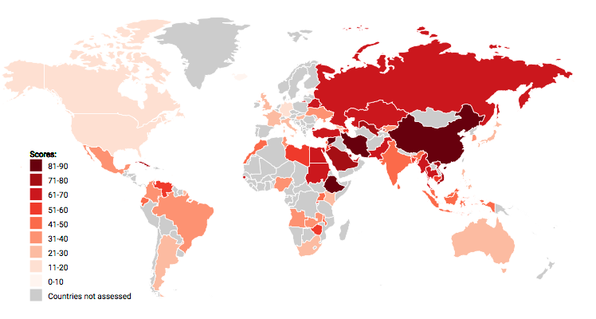
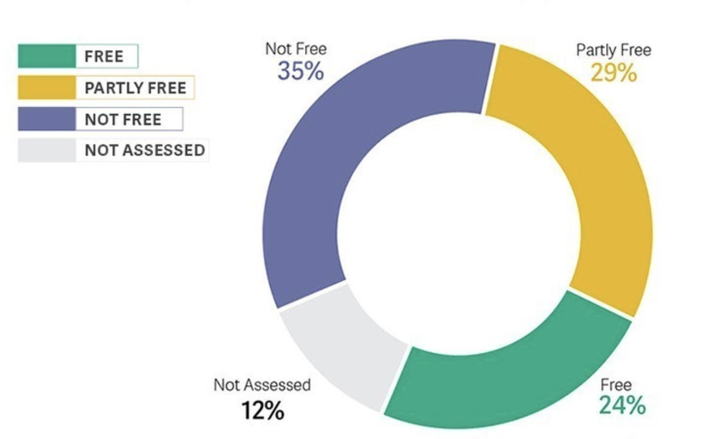

Stella Zhang
Initial Sketches
I plan to make an interactive map that showes the intensity of internect censorship around the world. The detailed information of each country will show when mouse hovered. I also plan to add inimation elements on the map to help users discover the mouse-over feature.
This pie chart shows the percentage of internet users that are under censorship control. Each slice will be clickable and shows more details about that section. I will also try to find and visulize other data to illustrate the severity of internect censorship.